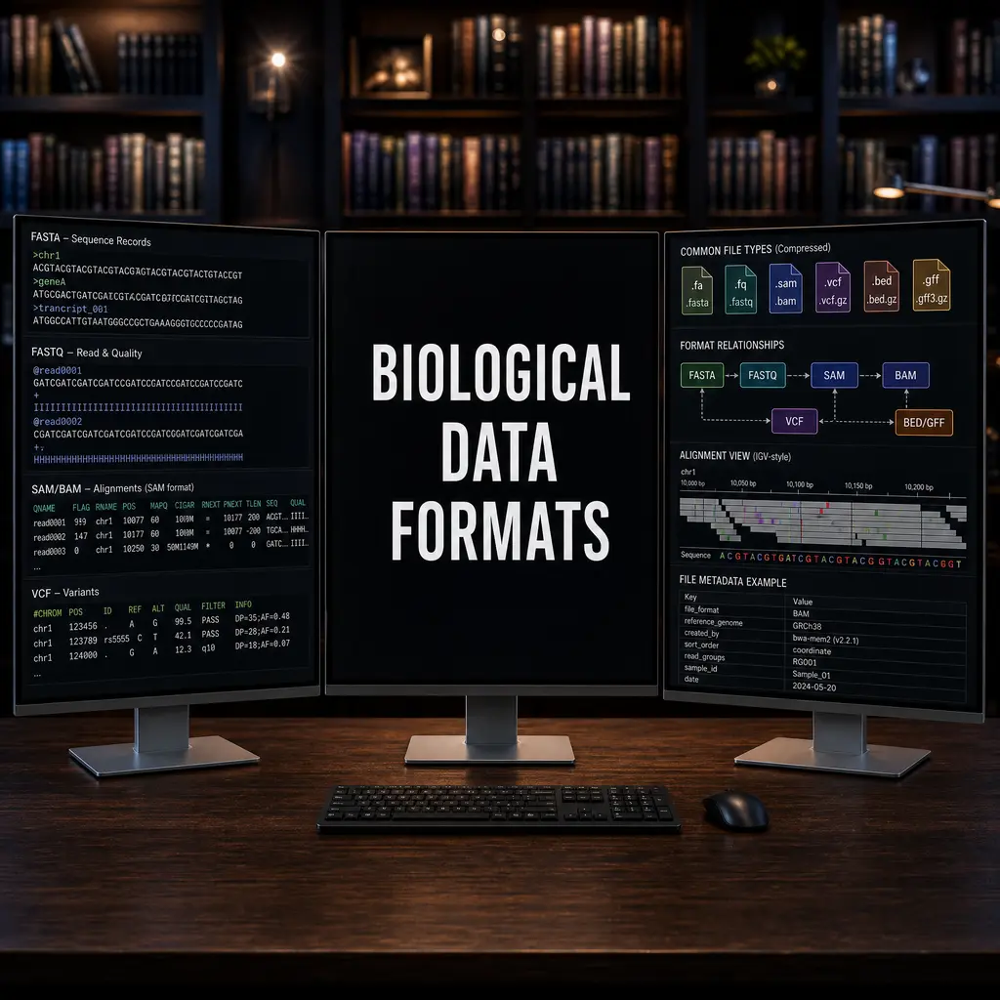
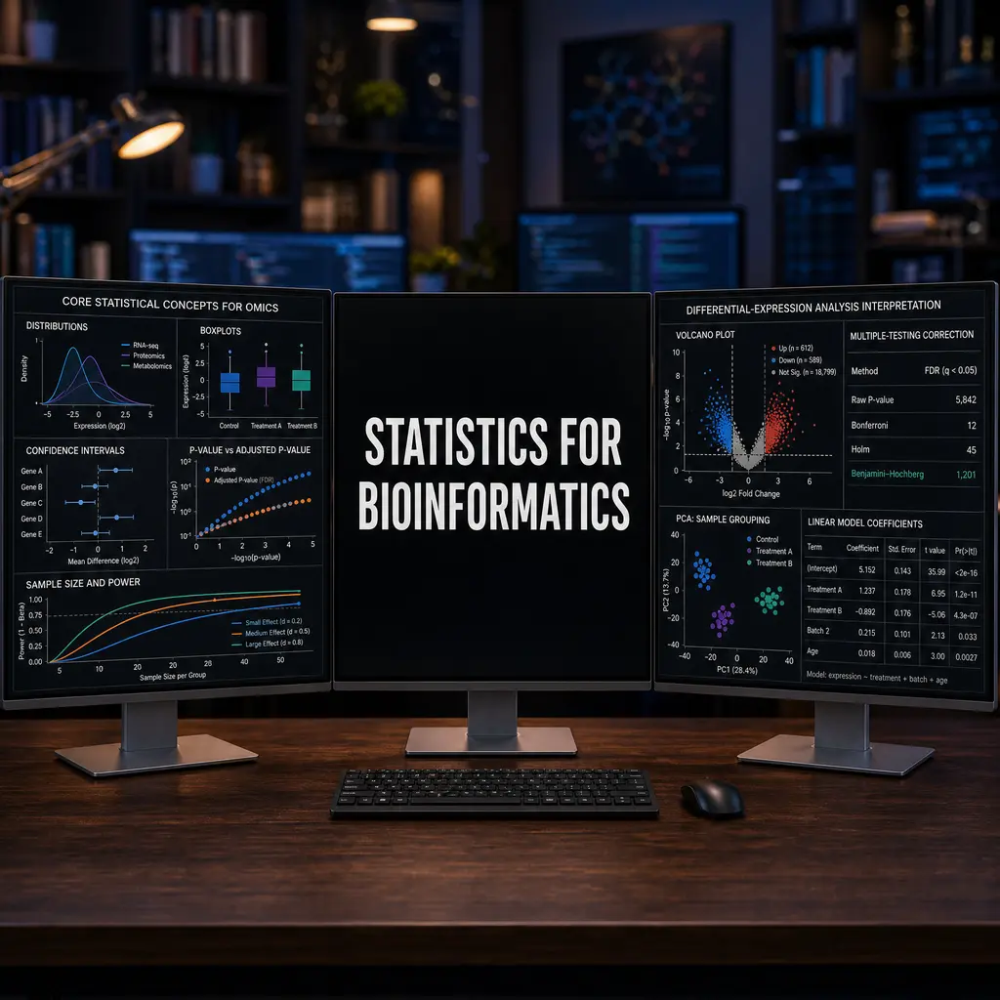
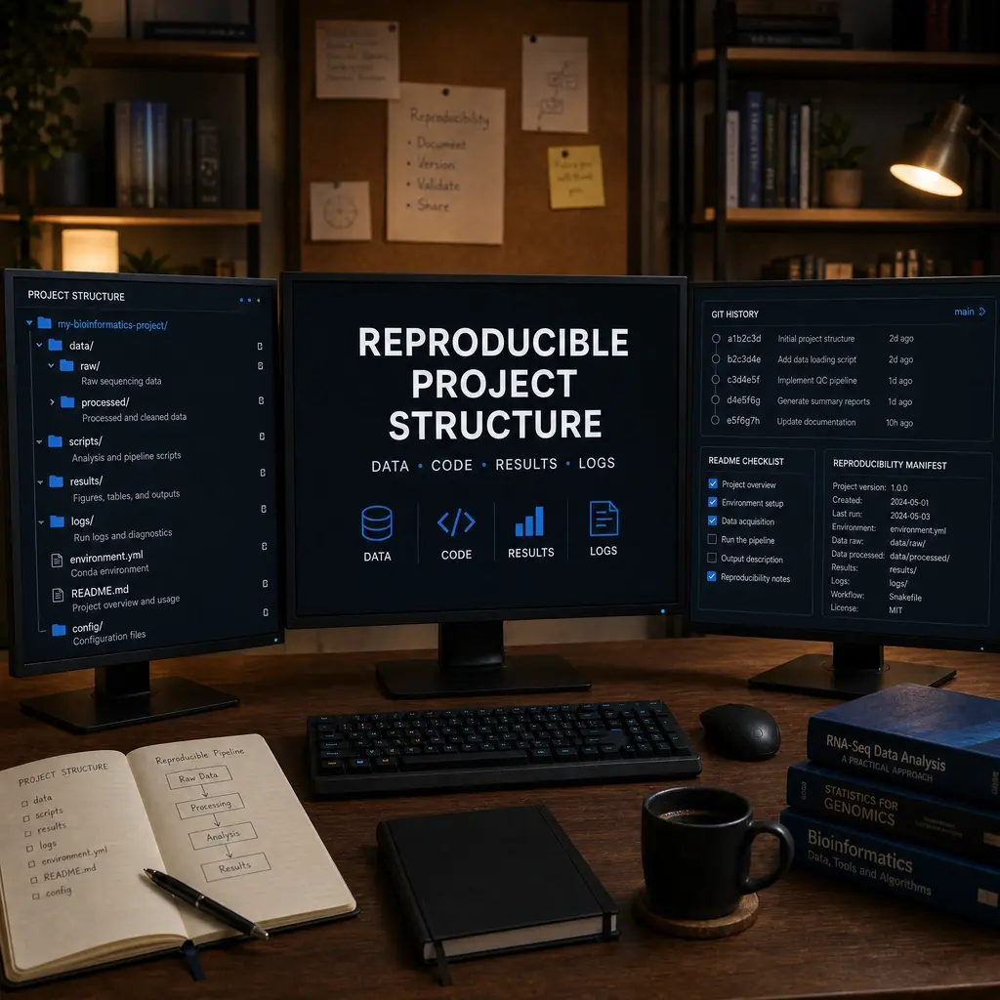
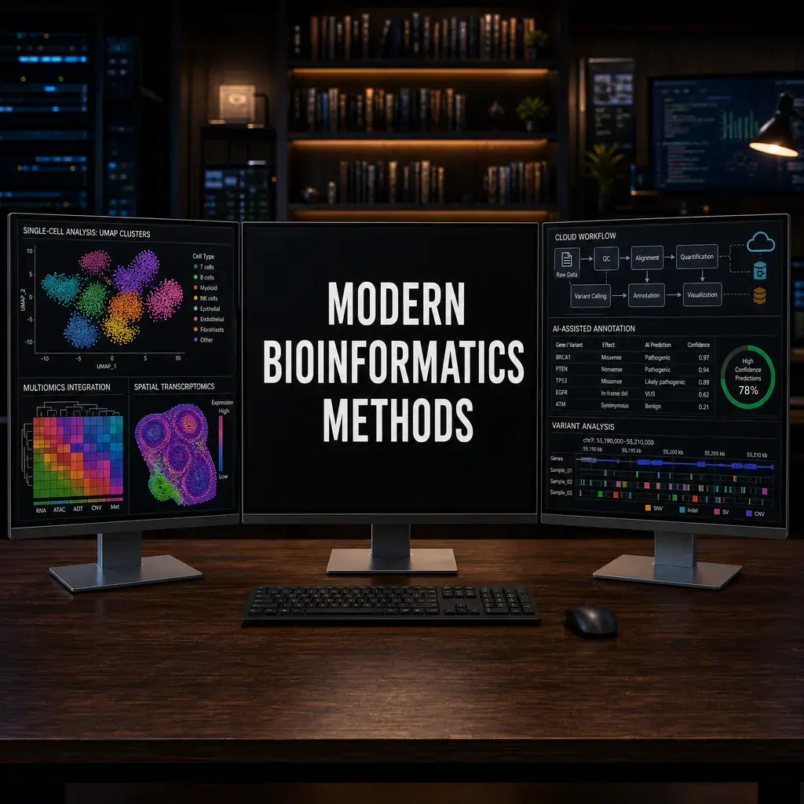
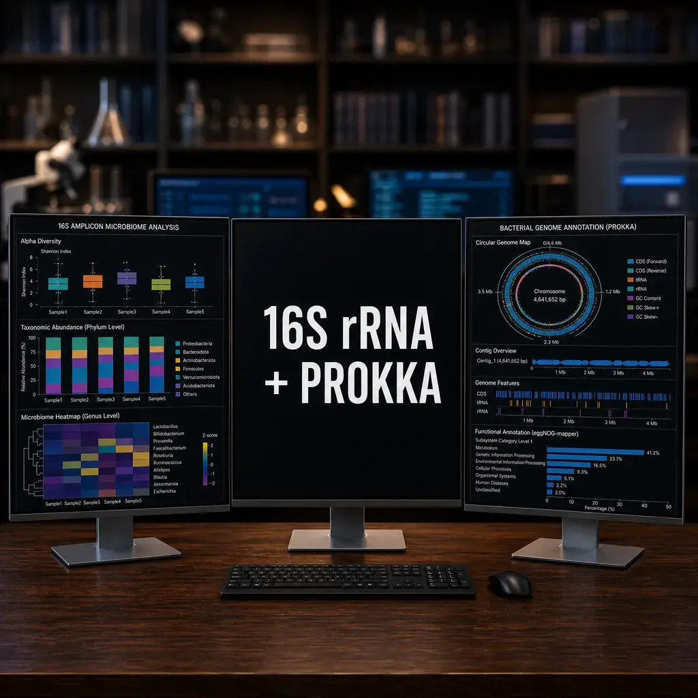
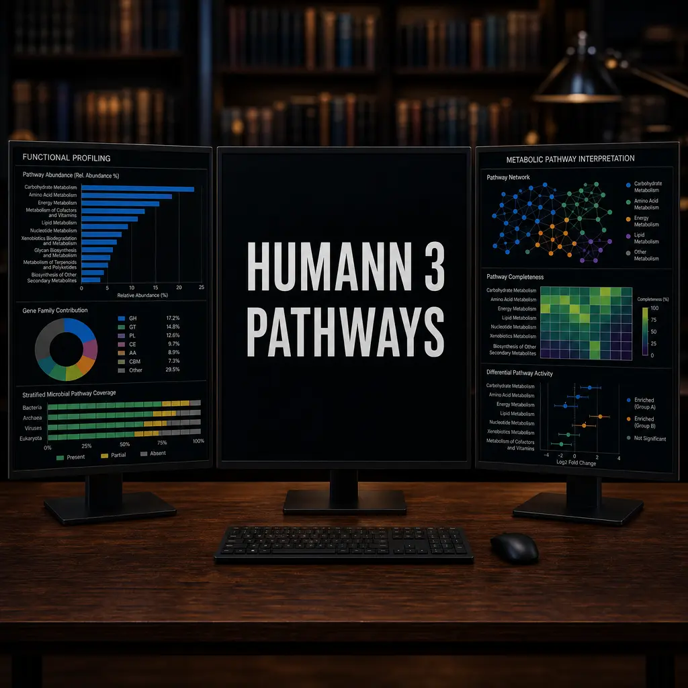
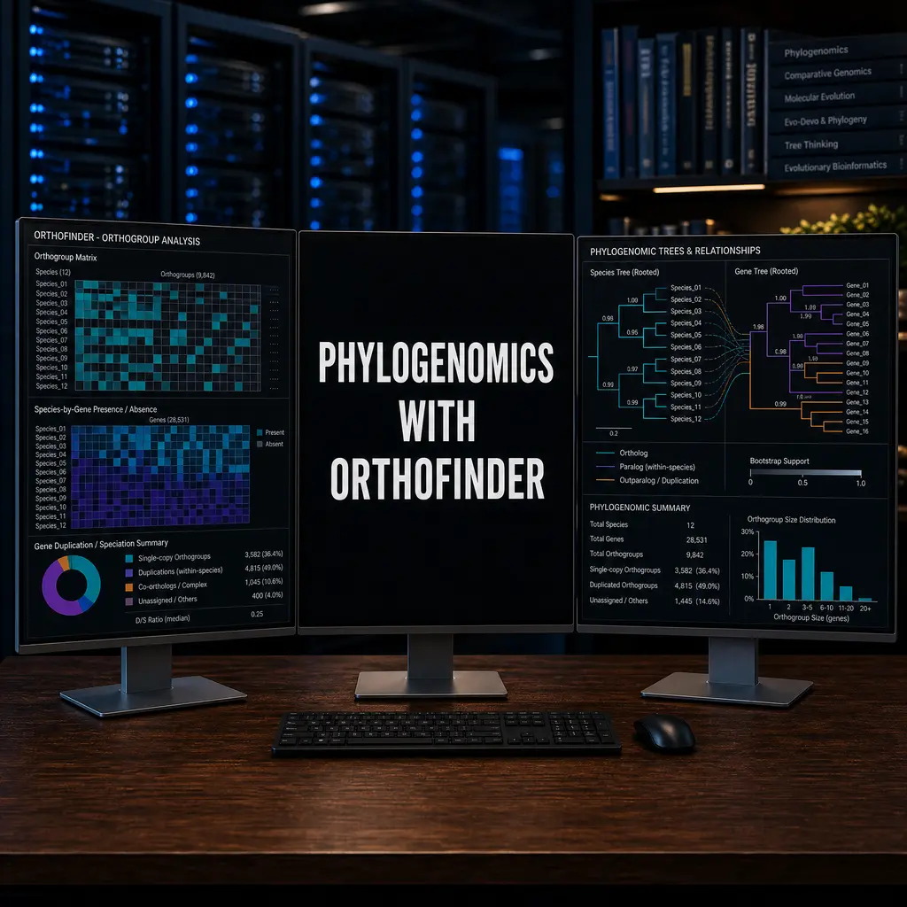
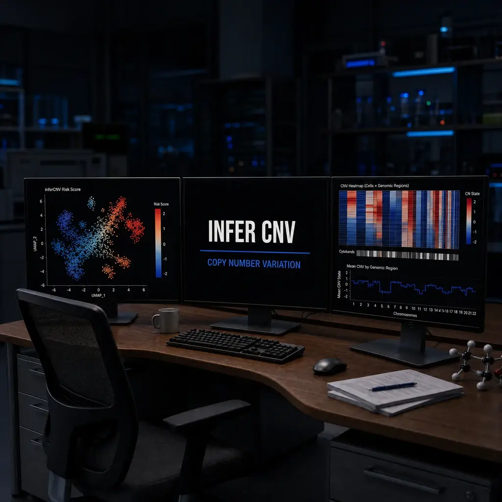

Computer and Data Fundamentals for Biologists
Build a clear bioinformatics project layout, inspect compressed FASTQ files, and verify downloaded data with checksums and gzip integrity tests.
THE TUTORIAL LIBRARY
From foundations to advanced analysis.
New here? Start with the foundationsBuild a clear bioinformatics project layout, inspect compressed FASTQ files, and verify downloaded data with checksums and gzip integrity tests.

Identify what FASTA, FASTQ, SAM/BAM, VCF, GTF/GFF, and count matrices contain, then inspect their structure and limits before analysis.
A practical sequencing QC workflow: verify FASTQ files, inspect read and alignment metrics, investigate outliers, and document sample-level decisions without universal cutoffs.
Create a local Git repository, review commits and ignore rules, record code provenance, and decide how to share bioinformatics code and large data safely.
Build a small Python workflow that reads FASTA records, validates a chosen DNA alphabet, and writes length and GC-fraction summaries to CSV.
Practice reshaping a small gene-count table, checking sample identifiers, and producing a clearly labeled library-size QC table and plot.

Plan a two-group bioinformatics comparison: identify independent biological replicates, inspect distributions, estimate a Welch mean difference with uncertainty, and control false discoveries across features.

Plan biological replication and balanced processing; validate sample metadata and decide when batch can be modeled.
Choose a compatible genome assembly and annotation release, validate their files and contigs, and record the exact references for reproducible analysis.
Choose and interpret QC plots, PCA, UMAP, heatmaps, and volcano plots with explicit preprocessing and cautious biological conclusions.

Build a bioinformatics project layout that separates inputs, code, and outputs, and records checksums, software versions, and run provenance.
Document omics data provenance, software and reference versions, figure legends, and the limits of biological interpretation with a practical reporting workflow.
Connect a biological question to suitable data and analysis methods, then plan reproducible checks and cautious interpretation.

A conceptual decision guide for matching bioinformatics methods to study questions, data inputs, assumptions, and validation checks; it compares single-cell, spatial, isoform, trajectory, and donor-aware approaches without a dataset or runnable pipeline.
Practice shell navigation and safe file handling by building a small bioinformatics project tree, checking paths, and distinguishing empty placeholders from compressed sequence data.

Use grep, sed, cut, awk, sort, and seqkit to inspect and reshape FASTA, FASTQ, and tabular files while recognizing when line-based commands are unsafe.
Write a Bash script that validates common four-line FASTQ and tab-separated annotation inputs, streams compressed files, and reports read-length or per-chromosome summaries.

Install Micromamba, manage isolated bioinformatics environments, use Bioconda channels deliberately, export and test environment specifications, and diagnose common setup failures.
Connect to an institutional HPC system with SSH, protect and register a key, transfer files with explicit local and remote paths, and diagnose common access problems.
Inspect Slurm partitions and job states, submit a small batch smoke test, and diagnose common queue and log problems while adapting commands to your cluster's policies.
Write Slurm batch scripts for a cluster: request resources, direct logs, submit and monitor jobs, and choose between task launches and job arrays. Examples require adaptation to local cluster policy and configuration.
Diagnose Slurm job failures by reading accounting records and logs, checking environment and resource evidence, and preparing a privacy-conscious support request.
Compare Snakemake and Nextflow workflow models, build synthetic file-copy examples in both tools, and review reproducibility checks for bioinformatics pipelines.
Compare Docker and Apptainer for bioinformatics, then trace a BWA mapping command through image selection, bind mounts, HPC execution, and reproducibility checks.

Choose between 16S rRNA amplicon profiling and prokaryotic genome annotation, then inspect the inputs, outputs, and limits of each workflow.
Walk through paired-end metagenomic assembly with metaSPAdes, optional host-read screening, read mapping with BWA and SAMtools, and cautious coverage interpretation.
Classify paired shotgun reads with Kraken2, estimate rank-specific abundances with Bracken, and interpret both outputs in context of database and sample-preparation limits.
Follow paired reads through QC, rRNA classification and host depletion, then interpret microbial functional profiles with attention to input contracts, normalization, reference limits and biological uncertainty.

Use HUMAnN 3 to profile microbial gene families and MetaCyc pathways from quality-controlled metatranscriptomic reads, join sample tables, and interpret pathway abundance and coverage with appropriate caveats.
Align homologous sequences, infer phylogenetic trees with IQ-TREE, MEGA-CC, or FastTree, and assess support, rooting, and model-dependent limits.

Prepare protein FASTA inputs for OrthoFinder, inspect orthogroup and species-tree results, and choose markers and downstream tree methods with their assumptions in view.
A practical single-sample WES variant-calling walkthrough covering alignment, GATK calling and filtering, reference-build liftover, VAF calculation, and interpretation of QC evidence and limitations.

A practical introduction to single-cell RNA-seq quality control and clustering with parallel Seurat and Scanpy examples, including input checks and dataset-specific interpretation.
Reproduce a public PBMC PCA–Harmony comparison with paired LISI diagnostics, inspect a rare-population caveat, and keep RPCA/CCA claims clearly scoped.

Choose and interpret downstream single-cell RNA-seq analyses: ligand–receptor inference, transcription-factor activity scoring, and clear visualizations, with attention to inputs, replicates, and limits.
Compare PAGA with diffusion pseudotime in Scanpy and branching trajectory workflows in R. Choose a defensible root, inspect inferred lineages, and interpret pseudotime as an ordering rather than measured time.
A sample-level pseudobulk workflow for single-cell RNA-seq: aggregate raw counts by biological sample, fit a DESeq2 model, check diagnostics, and interpret the limits of the comparison.
Use LISI and silhouette scores to assess batch mixing and cluster structure in single-cell RNA-seq embeddings, with practical cautions about labels, embeddings, and interpretation.
A practical guide to plotting Seurat single-cell data with SCpubr, dittoSeq, and ggplot2, including input checks, scale choices, sample composition, and interpretation.
Walk through single-cell TCR repertoire summaries and Seurat annotation, with explicit clone-definition and interpretation limits.
A cautious R walkthrough for ranking ligand–receptor hypotheses with LIANA, checking inputs, and deciding when CellChat pathway analysis adds value.
Run SingleR and Seurat label transfer on public PBMC data, inspect real disagreements and RNA markers, and reproduce the saved results with checked inputs.
Compare CellTypist, CELLama, and SingleR by method and evidence. Run a CellTypist prediction on compatible normalized data, then review labels against markers, reference fit, and uncertainty.

Prepare inferCNV inputs, run its R workflow, inspect expression-derived copy-number patterns, and assess their limits.
Learn how MuSiC uses annotated single-cell RNA-seq references to estimate cell-type proportions in bulk RNA-seq, and how to check inputs, interpret estimates, and assess reference limitations.
Prepare matched RNA and antibody-derived tag count matrices, preprocess each assay in Seurat, build a weighted-neighbor graph, and interpret modality weights with appropriate caveats.
A practical Visium workflow in Seurat and Squidpy/Scanpy: load counts with tissue coordinates, normalize and visualize features, cluster expression profiles, and interpret spatial patterns with quality and platform limits in view.
Compare PacBio HiFi and Oxford Nanopore long-read data, choose an analysis route for genome or transcript questions, and document the assumptions that shape QC, alignment, assembly, and isoform interpretation.
Apply for GitHub Education, activate Copilot Student if eligible, and practice reviewing AI-generated bioinformatics code with a synthetic TSV and explicit failure checks.
Install Cursor and Aider, work in a version-controlled bioinformatics project, and review AI-proposed code changes before testing them.

A conceptual guide to selecting and safely evaluating a specific Zotero MCP server: inspect its access path, permissions, and data flow, then verify a read-only test against a disposable collection. No MCP server installation or live Zotero test is included.
Plan a traceable NotebookLM literature review, check cited claims against source passages, and optionally connect an MCP client while accounting for third-party API and credential risks.
Use gget to retrieve Ensembl-linked gene metadata and sequence records, save the results, and assess what they can support.

Retrieve a precomputed AlphaFold DB model by UniProt accession, preserve the source-file provenance, and inspect per-residue pLDDT with a small Python workflow.
Use a standard-library evaluator to check externally generated scGPT or Geneformer embedding exports with donor-held-out kNN; first run a deliberately synthetic software check. This lesson includes no model output, inference, or biological accuracy claim.
Build a precise prompt for single-cell analysis, review the resulting Seurat or Scanpy code, and check its assumptions, outputs, and statistical limitations.
Run deterministic, local RNA-seq count-matrix QC and optional CPM workflows in R or Python, with synthetic fixtures, provenance records, and human review; the separate optional Python provider demo is not needed for the core exercises.
Design an auditable AI-assisted bioinformatics workflow with explicit inputs, evidence provenance, bounded retries, human review gates, and failure paths.
These labels describe the learning format, not validation status. Not every biological workflow has been run end to end. Check the lesson’s prerequisites and outputs; a teaching example is not a validated research or clinical pipeline.
No lessons match those filters. Try a broader search or reset the filters.
Analytics preferences
Allow optional Google Analytics cookies to help improve the site, or decline them. Your choice is stored in this browser. See our Cookie Policy for details.